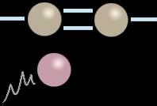

La
saturation
Accès direct
indice d'iode
: cliquer ici
Les substances saturées ne peuvent s'allier à d'autres
substances car elles ont déjà engagé toutes les liaisons possibles (valence
maximale), c'est-à-dire qu'une liaison avec un autre corps provoquerait une
rupture de la molécule initiale.
C'est une
liaison multiple entre deux atomes, au sein d'une molécule, qui joue le rôle "insaturateur",
caractéristiques de la plupart des liants et colles utilisés par les artistes.
Elle permet en effet d'engager une liaison avec une autre molécule (ou
atome) sans provoquer une rupture.
Donnons un illustration graphique simplifiée, un exemple.
Sur la première image, nous faisons un zoom sur une double liaison entre
deux atomes situés à l'intérieur d'une molécule. Un troisième atome (couleur
guimauve) approche de cette formation.

Dans la seconde image, l'une des deux liaisons s'est rompue pour se
reporter, de part et d'autre, sur le troisième élément tandis que l'autre
liaison continue à maintenir la cohésion de l'ensemble. Cette partie de la
molécule est maintenant saturée. Aucune rupture de la chaîne n'a eu lieu. Le
"corps" de la molécule a véritablement intégré un nouvel élément. Savoir si
cette union est durable est une autre question.

Ce n'est qu'un cas de figure parmi d'autres. Par exemple, chaque
atome de la molécule originelle peut se lier non pas avec un seul élément
tiers, mais avec deux atomes distincts, ou peut engager davantage
d'électrons dans l'échange (voir Covalence). Des
liaisons électroniques triples ou même quadruples existent.
D'autre part, le ou les atomes
intégrés peuvent parfaitement appartenir à un ensemble moléculaire. C'est de
cette manière que s'opère la formation de très grosses molécules, les
polymères. Autre
exemple : voir ci-dessous, Mesure de la saturation.
Pour donner une représentation à notre échelle du concept de saturation
en même temps qu'une explication directe du choix de ce terme,
supposons une substance A insaturée et une substance B susceptible de se
lier à la substance A. Lorsque l'on met en solution les deux substances, si
B est en quantité excédentaire par rapport aux possibilités de liaisons de
A, B finit par former un dépôt au fond du contenant (s'il est plus lourd que
A, sinon, il forme une couche supérieure ou s'évapore : selon sa nature, il
se différencie à sa manière).
L'insaturation n'est pas sans conséquences sur la
coloration. A ce sujet lire le chapitre XII des Dialogues de Dotapea,
Le jaunissement.
Mesure de
la saturation : l'indice d'iode
Lire l'article du glossaire consacré
à l'iode.
Cette mesure consiste à mettre en présence de grandes quantités de diiode
(typiquement, deux iodes liés par un chlore et de l'acide acétique, soit I2(acide)
+ Cl(acide) ) la ou les doubles liaisons présentes dans un ester gras. A la
fin de l'expérience (soumise à un protocole complexe), la quantité de
molécules iodées en présence est en quelque sorte soustraite à la quantité
initiale, permettant de savoir avec précision combien de diiodes ont été
capturés par les doubles liaisons.
On obtient un chiffre représentant le degré d'insaturation du corps
analysé.
Voici quelques données concernant différents corps gras. Les deux
premiers exemples donnent une bonne représentation de l'importance de la
proportion d'acide linoléique et de ses variantes
CLA, voir glossaire.
|
Deux exemples de substances brutes |
| |
Indice d'iode |
|
acide linoléique |
181 |
|
acide oléique |
90 |
|
Différentes huiles |
| |
Indice d'iode |
|
huile de lin, certaines huiles de poissons |
175-200 |
|
huile de carthame |
135-150 |
|
huile de noix |
145 |
|
huile d'oeillette |
131-151 |
|
huile de soja |
120-143 |
|
huile de tournesol (variété non "oléique") |
110-143 |
|
huile de maïs |
103-128 |
|
huile de colza |
96-100 |
|
huile d'arachide |
80-105 |
|
huile d'olive |
80-90 |
|
huile de ricin |
85 |
|
huile de palme |
25-32 |
Ces chiffres, provenant de plusieurs sources, sont fournis à titre indicatif, sans
aucune garantie d'exactitude.
D'ailleurs, tout dépend du mode d'extraction.
Visite
conseillé :
soapcalc.com/calc/SoapCalc.asp
Cette page destinée aux
savonniers donne l'indice d'iode
(et autres données) de différents corps gras
Retour
début de page